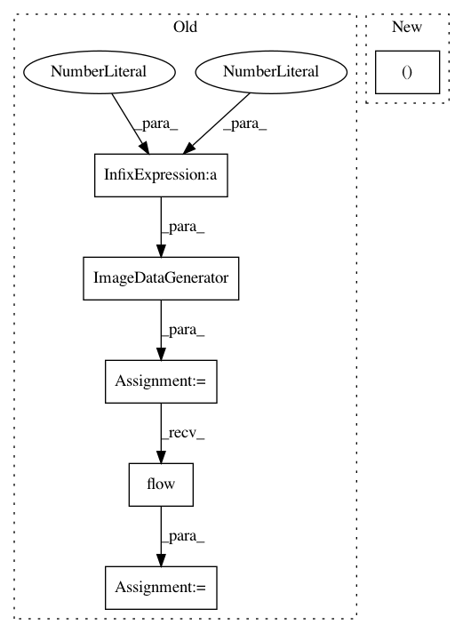

e6475ab4e069bd71d9f79f515d371c80b5699b88,scripts/ann_architectures/mnist/cnn_loihi.py,,,#,26
Before Change
traingen = ImageDataGenerator(rescale=1./255)
trainflow = traingen.flow(x_train, y_train, batch_size=batch_size)
testgen = ImageDataGenerator(rescale=1./255)
testflow = testgen.flow(x_test, y_test, batch_size=batch_size)
checkpointer = ModelCheckpoint(filepath="cnn.{epoch:02d}-{val_acc:.2f}.h5",
verbose=1, save_best_only=True)
After Change
history = model.fit(x_train, y_train, batch_size, nb_epoch,
callbacks=[checkpointer],
validation_data=(x_test, y_test))
plot_history(history)
In pattern: SUPERPATTERN
Frequency: 3
Non-data size: 6
Instances
Project Name: NeuromorphicProcessorProject/snn_toolbox
Commit Name: e6475ab4e069bd71d9f79f515d371c80b5699b88
Time: 2019-07-11
Author: bodo.rueckauer@intel.com
File Name: scripts/ann_architectures/mnist/cnn_loihi.py
Class Name:
Method Name:
Project Name: NeuromorphicProcessorProject/snn_toolbox
Commit Name: 85e2c1959f14c7e1ff053cdcbc94f7e34487cea1
Time: 2019-04-16
Author: bodo.rueckauer@intel.com
File Name: scripts/ann_architectures/mnist/cnn_loihi.py
Class Name:
Method Name:
Project Name: NeuromorphicProcessorProject/snn_toolbox
Commit Name: bbbdbcc1bda5260269cfa60beab33ea654ffd768
Time: 2016-08-27
Author: iulialexandra@ini.uzh.ch
File Name: snntoolbox/io_utils/cifar10_load.py
Class Name:
Method Name: get_cifar10